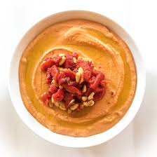

Spicy Hummus

Description
Spicy hummus is a bold twist on the classic Middle Eastern dip, combining creamy chickpeas with fiery spices for a flavorful kick. The warmth of smoked paprika and cayenne pepper enhances the nuttiness of tahini, while fresh lemon juice adds a bright contrast. Garlic and cumin deepen the taste, creating a rich, well-balanced spread. Perfect as a dip for pita or vegetables, it also works as a spicy sandwich spread or a topping for grain bowls. Packed with protein, fiber, and healthy fats, this hummus is both nutritious and satisfying. Adjust the spice level to suit your taste!
Ingredients
- 1 can (400g) chickpeas, drained and rinsed
- 2 tbsp tahini
- 2 tbsp extra virgin olive oil
- Juice of 1 lemon
- 1 clove garlic, minced
- 1 tsp ground cumin
- ½ tsp smoked paprika
- ½ tsp cayenne pepper (adjust for spice level)
- ½ tsp salt (or to taste)
- 2-3 tbsp water (as needed for consistency)
- 1 small red chili, finely chopped (optional)
Instructions
- In a food processor, blend chickpeas, tahini, olive oil, lemon juice, garlic, cumin, paprika, cayenne, and salt until smooth.
- Add water, one tablespoon at a time, to reach the desired consistency.
- Taste and adjust seasoning or spice level.
- For extra heat, stir in finely chopped red chili or drizzle with chili oil.
- Serve with warm pita, fresh veggies, or as a spicy spread.
Home